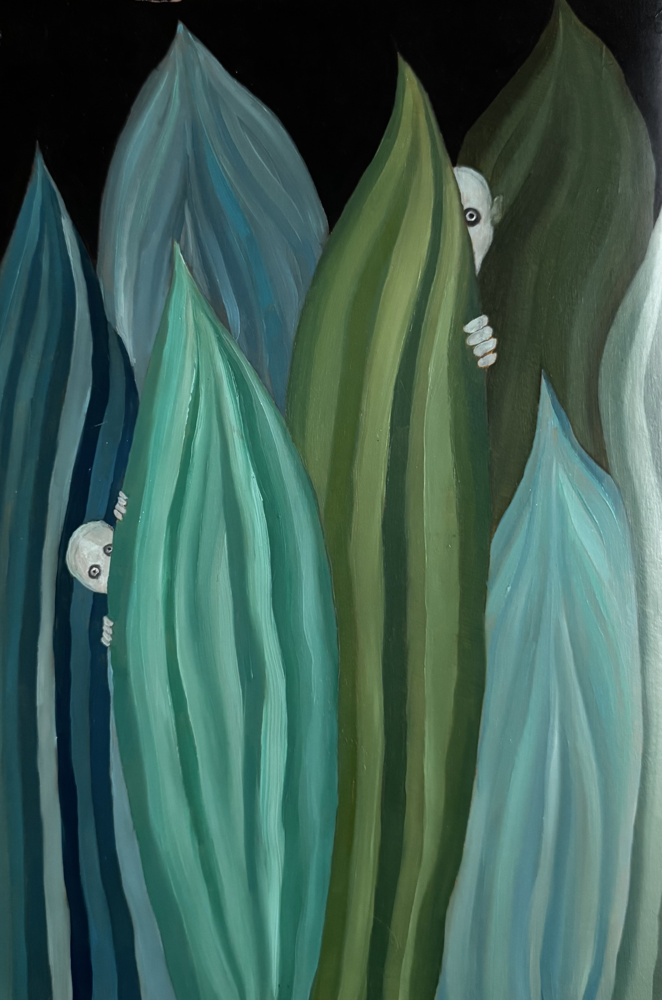
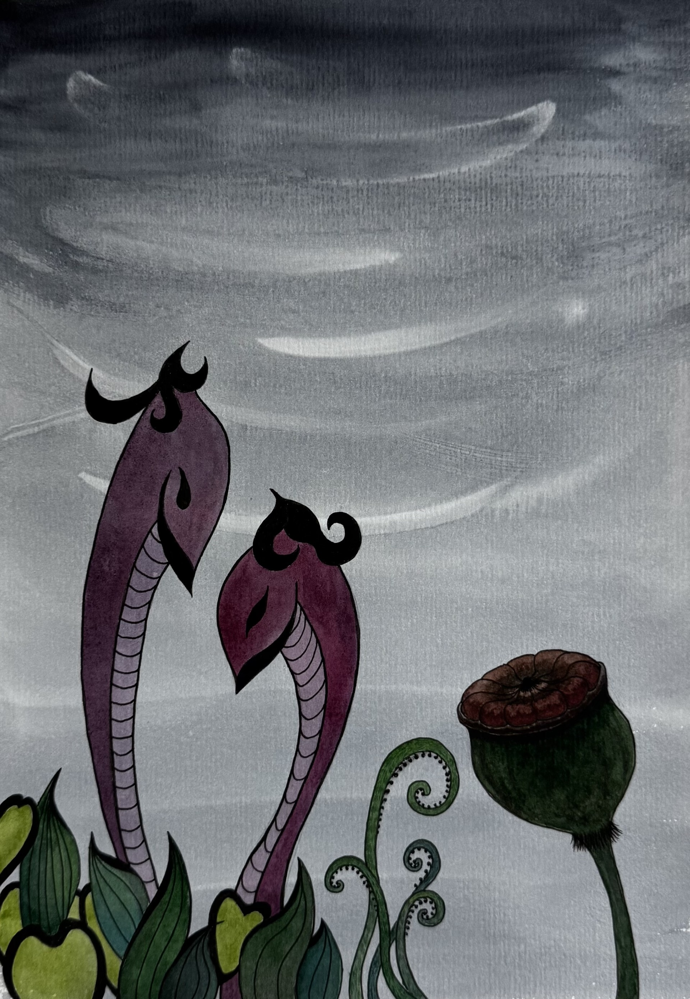
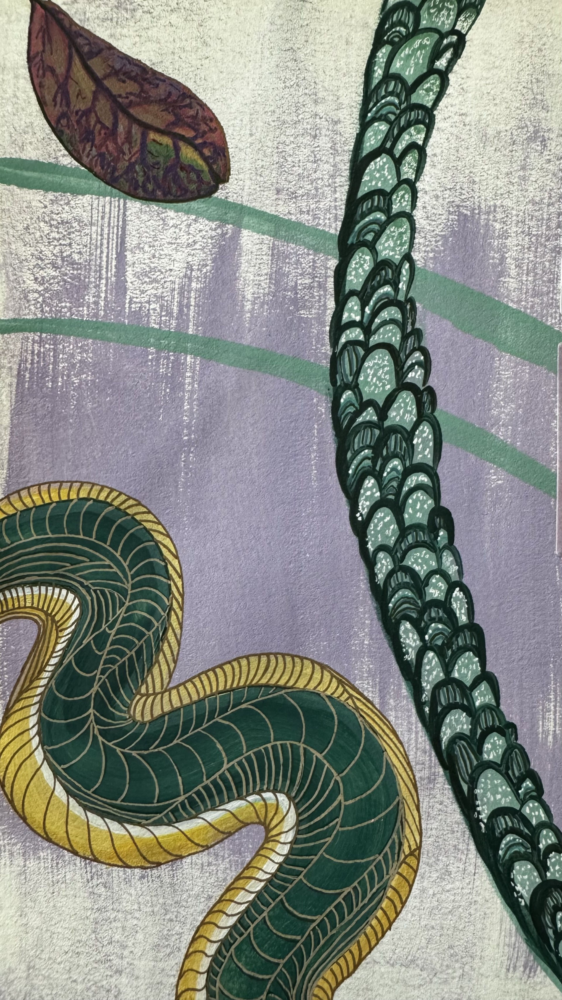

Watercolor · Ink · Oil
Mythic creatures painted as visual fables.
Living the Fantasy (2021–present) — allegorical paintings exploring love, survival, and coexistence through fantasy and symbolism.

Featured series
Aida Aichik's portfolio is built around two main bodies of work.

Living the Fantasy
2021–present · watercolor, ink, oil
Allegorical creatures as visual fables — tender, strange, and emotionally charged.

Fragile Futures
Selected works · nature, resilience, coexistence
A dialogue with wildlife and the natural world—intimate presences, not distant landscapes.